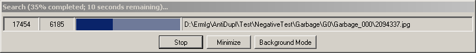

Search Progress Window
Search Progress Window appears during search is performed and has the following view:
In the title bar displays the percentage of work performed, as well as the approximate time required that the program to end its work.
Next is a table with columns displays the following information:
The total number of found images.
Number of images have already been checked.
Graphic displaying of percentage of work done. Where the dark blue shows the number of fully tested images, and light blue - the number of images that are ready to test (have been loaded from the disk or database).
Name of the picture or directory, which are checked at the current time.
Below at the window there are three buttons:
Stop - using this button, you can prematurely stop the search. Note that search can be stopped by pressing Escape key.
Minimaze - if you click on this button, the program will be minimized onto the toolbar. In its pop-up window will display data that was previously displayed in the window title. To return to the program to its original state, simply click on it. Note, that at the conclusion of the search program will automatically return to its original state.
Background Mode - using this button, you can minimize the program to the system tray. In this case the priority of the application will be reduced. If you move your mouse to the icon in the system tray
, then pop-up window will display a percentage of work performed, as well as the approximate time it takes for the program to end the search. Return the program to its original state is possible by double clicking on the icon in the system tray. Upon completion of the search program automatically returns to its original state.